🧭 1. Tổng quan điểm đến
Khác biệt với nhịp sống hối hả hiện đại, Hội An níu chân du khách bằng không gian bình yên, trầm mặc. Những con phố nhỏ rợp bóng hoa giấy đỏ rực bên bức tường vàng nghệ đặc trưng, những nếp nhà gỗ mái ngói âm dương rêu phong trăm tuổi, cùng dòng sông Hoài lấp lánh hàng ngàn ánh hoa đăng khi đêm về tạo nên bức tranh thủy mặc sống động và lãng mạn vô bờ bến.
Được UNESCO vinh danh là Di sản Văn hóa Thế giới từ năm 1999 và mới đây nhất là thành viên chính thức của Mạng lưới các Thành phố Sáng tạo Toàn cầu (UCCN 2023) về Thủ công và Nghệ thuật Dân gian, Hội An tiếp tục khẳng định sức sống mãnh liệt của một di sản sống, nơi cộng đồng cư dân bản địa vẫn ngày ngày sinh hoạt, giữ gìn phong tục tập quán và nghề thủ công truyền thống.
📜 2. Vị trí địa lý & Dấu ấn lịch sử
Thành phố Hội An nằm ở vùng hạ lưu sông Thu Bồn, thuộc vùng đồng bằng ven biển tỉnh Quảng Nam, cách trung tâm thành phố Đà Nẵng khoảng 30km về phía nam. Địa hình Hội An bằng phẳng, được bao bọc bởi hệ thống sông ngòi kênh rạch chằng chịt đổ ra cửa biển Cửa Đại, nơi có cụm đảo Cù Lao Chàm chắn gió bão. Khí hậu mang tính chất nhiệt đới gió mùa miền Trung với mùa khô rực rỡ từ tháng 2 đến tháng 8 và mùa mưa từ tháng 9 đến tháng 1 năm sau.
⚖️ Căn cứ Pháp lý & Quyết định Xếp hạng Di sản Chính thống
Hồ sơ khoa học và giá trị ngoại hạng toàn cầu của Đô thị cổ Hội An được khẳng định qua các công ước quốc tế và văn bản pháp luật Nhà nước:
- Công ước UNESCO (04/12/1999): Tại Kỳ họp thứ 23 Ủy ban Di sản Thế giới ở Marrakesh (Morocco), Đô thị cổ Hội An được công nhận là Di sản Văn hóa Thế giới theo tiêu chí (ii) về sự giao lưu văn hóa và tiêu chí (v) về hình mẫu thương cảng truyền thống châu Á.
- Quyết định số 1419/QĐ-TTg ngày 02/10/2009 của Thủ tướng Chính phủ: Xếp hạng Di tích quốc gia đặc biệt đối với Đô thị cổ Hội An, thành phố Hội An, tỉnh Quảng Nam.
- UNESCO vinh danh Thành phố Sáng tạo (31/10/2023): Hội An chính thức gia nhập Mạng lưới các Thành phố Sáng tạo của UNESCO (UCCN) trên lĩnh vực Thủ công và Nghệ thuật Dân gian.
- Quyết định số 2162/QĐ-TTg của Thủ tướng Chính phủ: Phê duyệt Quy hoạch tổng thể bảo tồn, tôn tạo và phát huy giá trị Di sản văn hóa thế giới Đô thị cổ Hội An gắn với phát triển thành phố Hội An và du lịch giai đoạn 2012 - 2025.
- Di sản văn hóa phi vật thể quốc gia: Bộ VHTTDL ghi danh Nghề gốm Thanh Hà, Nghề mộc Kim Bồng, Nghề trồng rau Trà Quế và Nghề làm đèn lồng Hội An.
Về dấu ấn lịch sử, từ thế kỷ II đến thế kỷ XV dưới thời Vương quốc Champa cổ đại, vùng đất này đã là cửa ngõ giao thương đường biển sầm uất mang tên Đại Chiêm Hải Khẩu. Bước sang thế kỷ XVI dưới thời các chúa Nguyễn mở mang bờ cõi Đàng Trong, Hội An nhanh chóng vươn lên thành một trong những thương cảng quốc tế hưng thịnh nhất châu Á mang tên Faifo.
Nơi đây từng là bến đỗ tấp nập của các đoàn thương thuyền Châu Ấn Thuyền (Shuinsen) từ Nhật Bản, thuyền buôn của các bang thương nhân người Hoa (Phúc Kiến, Triều Châu, Quảng Đông, Hải Nam) cùng các thương đoàn Hà Lan, Bồ Đào Nha, Anh, Pháp đến trao đổi lụa tơ tằm, trầm hương, đồ gốm sứ và gia vị. Sự cộng cư hòa hợp giữa các cộng đồng dân cư đã sản sinh ra một nền văn hóa kiến trúc, ẩm thực và nếp sống khoan hòa, bao dung độc nhất vô nhị.
🏮 3. Huyền thoại & Truyền tích dân gian vùng đất
🐉 Thần tích Chùa Cầu & Thanh kiếm trấn yểm Thủy quái Cù (Mamazu)
Trong tâm thức dân gian của người dân phố Hội và thương nhân Nhật Bản xưa, dưới lòng đại dương sâu thẳm có một con thủy quái khổng lồ mang tên Cù (người Nhật gọi là Namazu). Đầu của con Cù nằm ở tận đất nước Nhật Bản, đuôi vắt sang Ấn Độ Dương, còn chiếc lưng gồ ghề lại nằm ngay dưới vùng đất Hội An. Mỗi khi con quái vật này cựa mình, nước biển dâng cao gây ra sóng thần động đất dữ dội ở Nhật Bản và lũ lụt triền miên ở Hội An. Vào đầu thế kỷ XVII, các thương nhân Nhật Bản đã cùng người dân địa phương dựng nên cây cầu ngói bắc qua lạch nước sông Hoài, lập bàn thờ Bắc Đế Trấn Vũ (thần trị thủy) bên trong miếu, tựa như một thanh kiếm thần cắm thẳng vào sống lưng con Cù, trấn yểm cho đất trời yên ổn, phố cảng muôn đời bình yên.
💧 Huyền thoại Giếng cổ Bá Lễ & Mạch nước thần ngàn năm
Nằm sâu trong con hẻm nhỏ đường Phan Châu Trinh, giếng Bá Lễ được đào từ thời người Chăm cổ thế kỷ X. Trải qua hơn 1.000 năm lịch sử với bao mùa nắng hạn và bão lũ, mạch nước ngầm giếng Bá Lễ chưa bao giờ cạn, nước giếng quanh năm trong vắt, ngọt lịm và thanh mát lạ thường. Người sành ăn xứ Hội khẳng định rằng: sợi mì Cao Lầu muốn giòn dai đậm đà, nước Mót thảo mộc muốn thơm ngát ngọt thanh thì bắt buộc phải dùng chính nguồn nước giếng Bá Lễ ngâm gạo và chưng cất, nếu thay bằng nước nơi khác thì hương vị đặc trưng ấy sẽ hoàn toàn biến mất.
🕯️ Sự tích Hoa Đăng Sông Hoài & Lời nguyện cầu bình an
Tục thả đèn hoa đăng trên dòng sông Hoài vào các đêm rằm bắt nguồn từ nét đẹp tâm linh của cư dân thương cảng cổ. Những chiếc đèn hoa bằng giấy màu lung linh ngọn nến nhỏ được thả trôi theo dòng nước mang theo lời nguyện cầu sức khỏe, bình an cho gia đình, đồng thời là nghi thức tưởng nhớ những người đi biển không may bỏ mình nơi sóng gió biển khơi. Ngắm hàng ngàn đốm sáng bập bềnh trên sóng nước là trải nghiệm thanh lọc tâm hồn tuyệt mỹ.
🌸 4. Chuỗi hình ảnh 4 mùa du lịch
Hội An mỗi mùa trong năm đều mang một nhịp đập cảm xúc thi vị. Từ sắc xuân rực rỡ đón Tết truyền thống, nắng hạ vàng ươm hoa giấy nhuộm phố, đến đêm thu trăng rằm hoa đăng lung linh và mùa đông nước nổi sông Hoài:
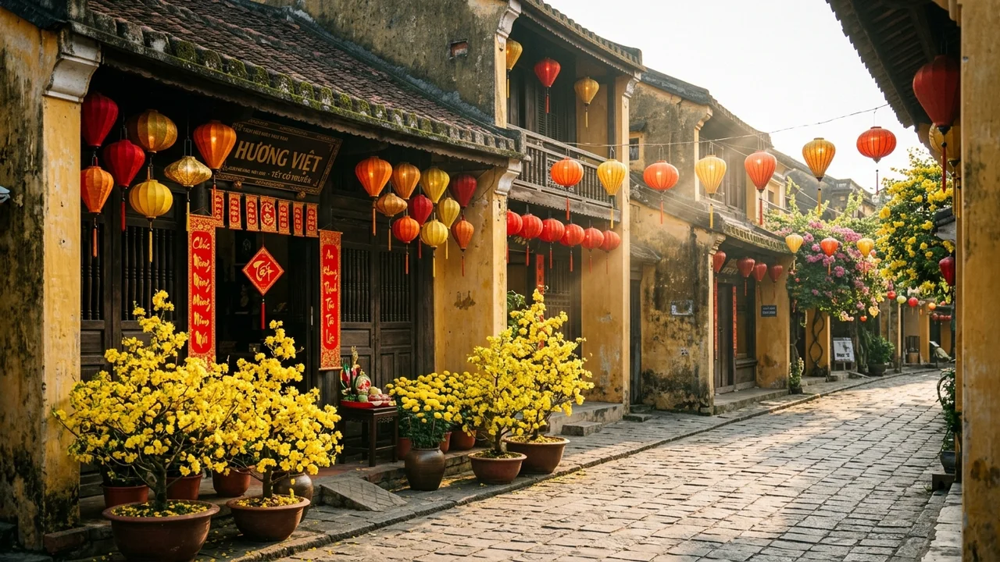
Tháng 1 - 3Mùa Xuân: Tết Phố Cổ Rực Rỡ Sắc Mai Vàng
Thời điểm: Tháng 1 đến hết tháng 3 Dương lịchTiết trời mùa xuân mát mẻ, nắng nhẹ chan hòa. Cả phố cổ ngập tràn sắc vàng của hoa mai, sắc đỏ của lồng đèn và câu đối Tết. Các trò chơi dân gian như bài chòi, đập niêu đất, hội hoa xuân trên sông Hoài tạo nên không khí tưng bừng hoài cổ.
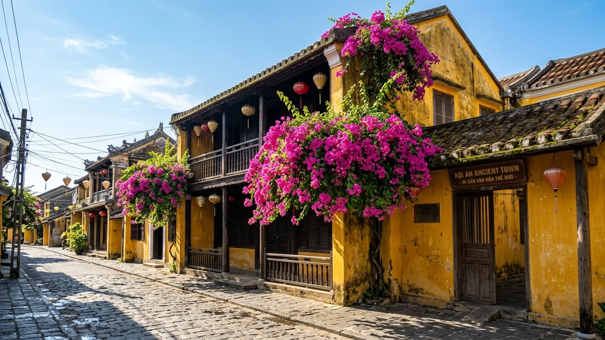
Tháng 4 - 6Mùa Hạ: Nắng Vàng Ruộm & Giàn Hoa Giấy Rực Rỡ
Thời điểm: Tháng 4 đến tháng 6 Dương lịchMùa hoa giấy rực rỡ nhất trong năm. Ánh nắng hè miền Trung làm bừng sáng những bức tường vàng nhuốm màu thời gian. Thời tiết hoàn hảo để đạp xe ra bãi biển An Bàng tắm mát, thưởng thức hải sản và lặn ngắm san hô Cù Lao Chàm.
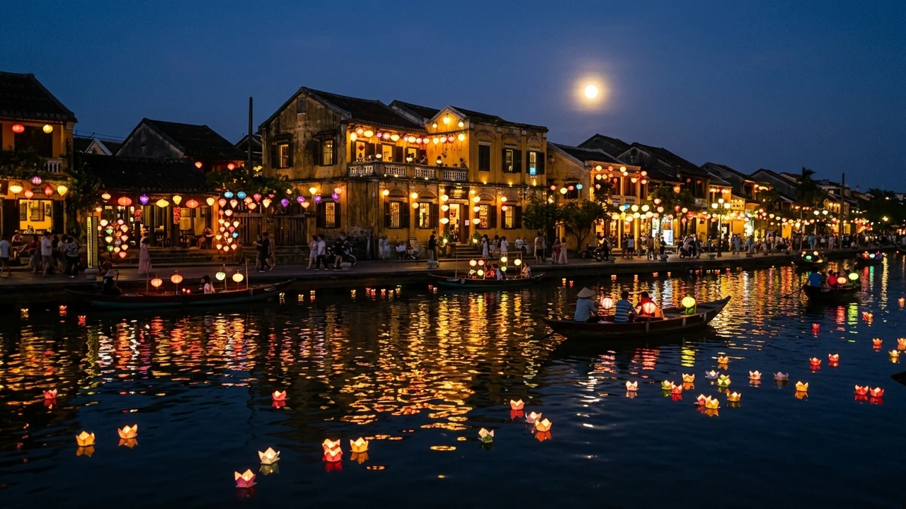
Mùa Thu: Vạn Ánh Hoa Đăng Lung Linh Phố Hoài
Thời điểm: Tháng 7 đến tháng 9 Dương lịchThời điểm lãng mạn nhất trong năm khi tiết trời vào thu dịu mát. Lễ hội đêm rằm phố cổ (ngày 14 Âm lịch hàng tháng) tái hiện không gian cổ xưa thế kỷ XVII với tiếng đàn ca, bài chòi và ánh hoa đăng bồng bềnh như dải ngân hà trên sông.
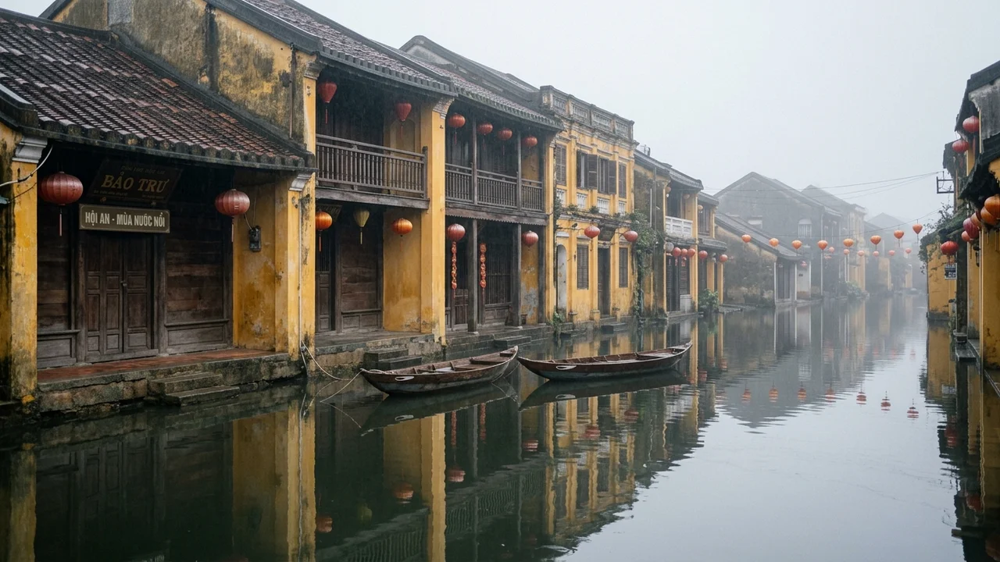
Mùa Đông: Mùa Nước Nổi Sông Hoài & Trầm Mặc Cổ Kính
Thời điểm: Tháng 10 đến tháng 12 Dương lịchMùa đông mang lại một Hội An rất đỗi khác biệt. Ngồi trong quán cà phê gác gỗ ngắm mưa rơi trên mái ngói rêu phong, nhâm nhi tách trà thảo mộc nóng ấm và thưởng thức bát cao lầu cay nồng là cảm giác khó quên.
📸 5. Top 10 Thắng cảnh biểu tượng & Dấu tích lịch sử
Khám phá trọn vẹn 10 công trình kiến trúc cổ và danh thắng biểu tượng nhất làm nên danh tiếng toàn cầu của Đô thị cổ Hội An:
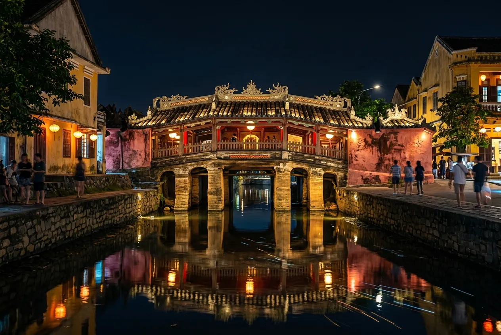
1. Chùa Cầu (Lai Viễn Kiều) — Linh Hồn Phố Hội
Biểu tượng bất hủ in trên tờ tiền polyme 20.000 VNĐ, minh chứng sống động cho mối bang giao hữu nghị Việt - Nhật suốt bốn thế kỷ.
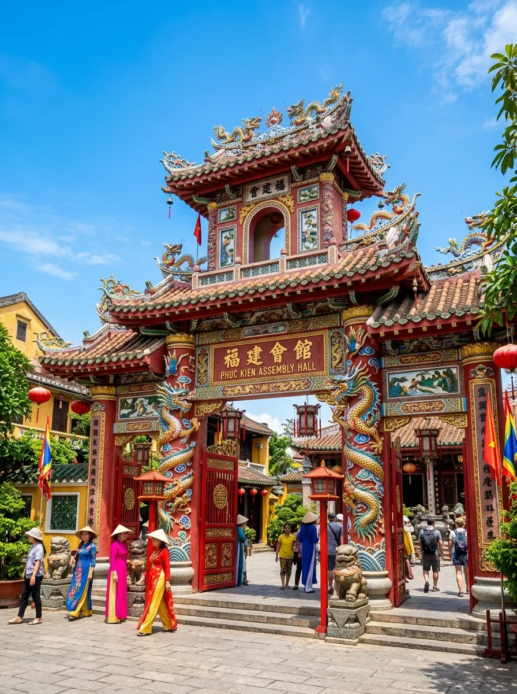
2. Hội Quán Phúc Kiến — Đền Thần Cổ Kính
Hội quán lớn nhất và nguy nga nhất trong ngũ bang hội quán người Hoa tại Hội An, nơi lưu giữ nhiều bảo vật gốm sứ tinh xảo.
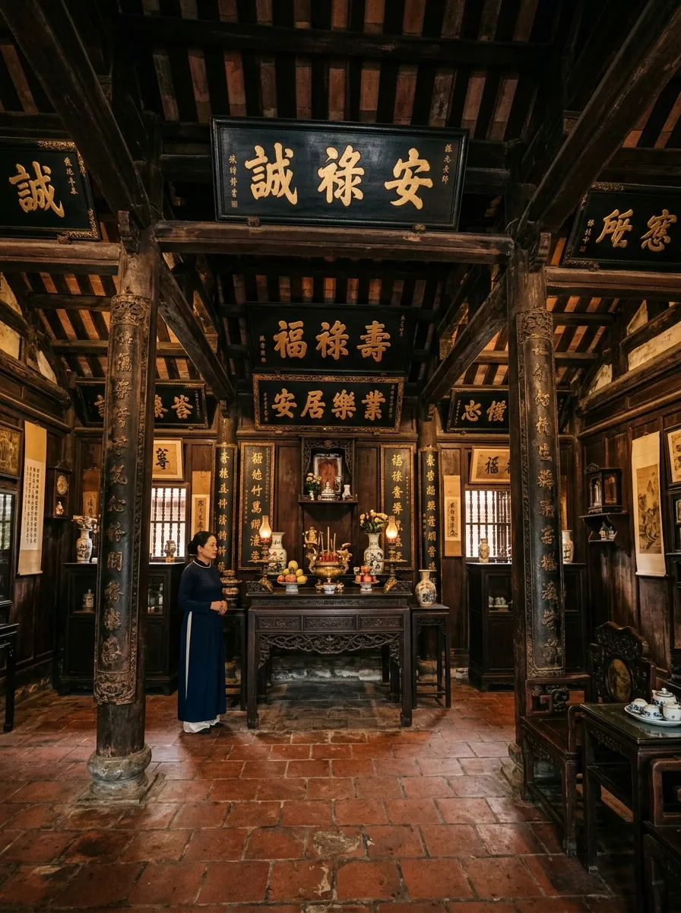
3. Nhà Cổ Tấn Ký — Dấu Tích Thương Gia
Ngôi nhà cổ đầu tiên được công nhận Di tích quốc gia, nơi lưu giữ báu vật chén Khổng Tử và hệ thống tời chống lũ độc đáo.
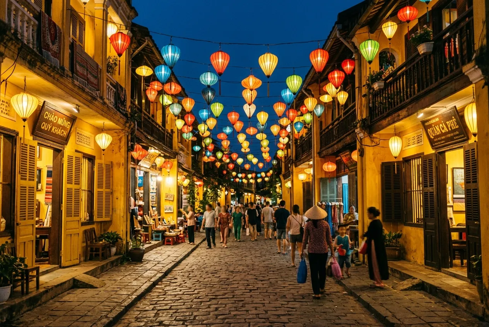
4. Phố Đèn Lồng — Thiên Đường Sắc Màu Về Đêm
Di sản văn hóa phi vật thể của Hội An, biến từng ngõ nhỏ rêu phong thành cung đường cổ tích lung linh huyền ảo trong mắt bạn bè quốc tế.
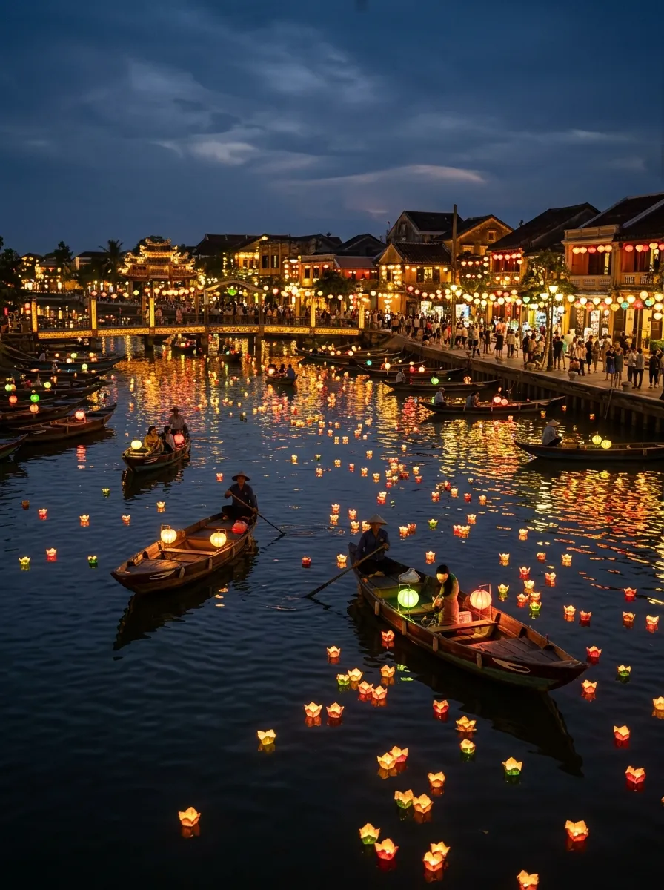
5. Sông Hoài — Trầm Tích Thuyền Đò
Linh hồn của phố Hoài, nơi lãng đãng những câu hò điệu lý và ánh nến hoa đăng trôi nhẹ nhàng trong gió đêm.
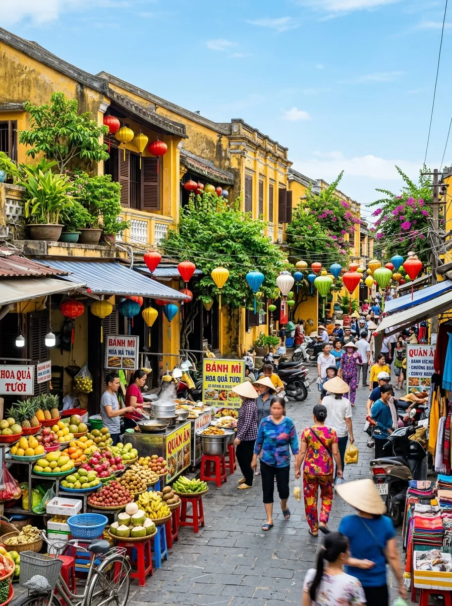
6. Chợ Hội An — Hồn Quê Phố Cổ
Nơi hội tụ trọn vẹn hương vị xứ Quảng với các quầy cao lầu, mì Quảng, bánh bèo, chè bắp thơm phức và hải sản tươi rói.
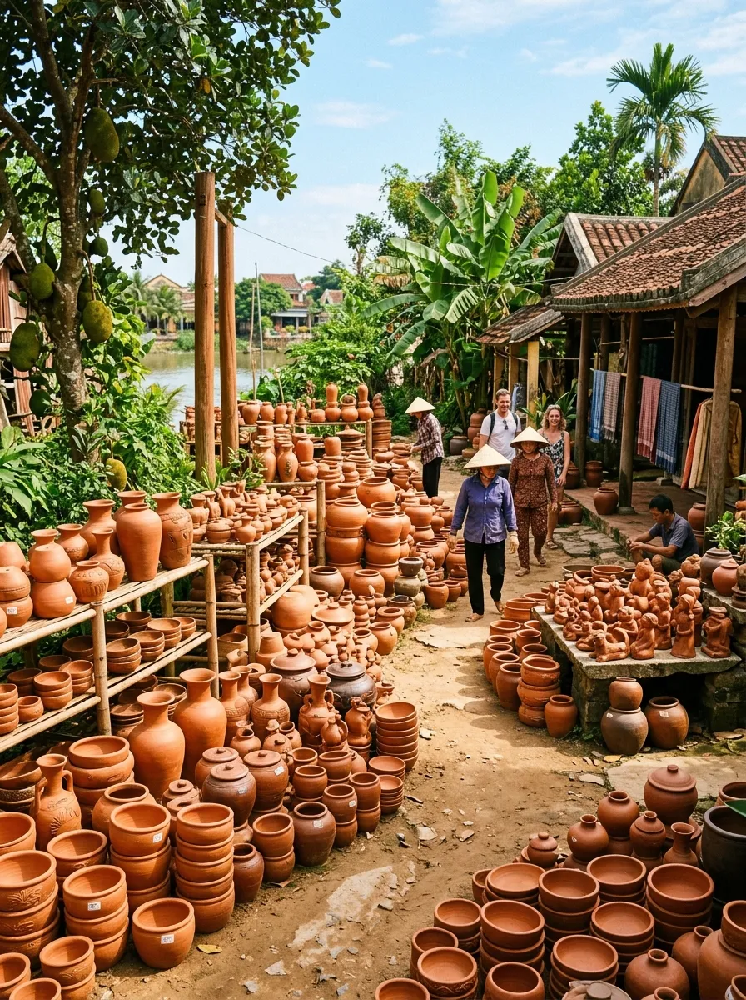
7. Làng Gốm Thanh Hà — Đất Nung Truyền Thống
Tự tay trải nghiệm nhào nặn đất sét trên bàn xoay và chiêm ngưỡng công viên gốm đất nung lớn nhất Việt Nam.
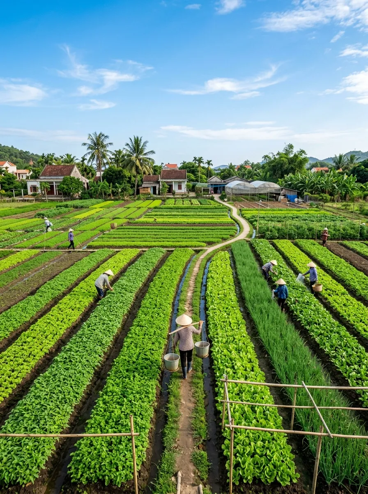
8. Làng Rau Trà Quế — Hương Đồng Cỏ Nội
Trải nghiệm hóa thân làm nông dân tưới rau bằng gáo đôi truyền thống và thưởng thức món tôm hữu đặc sản ngọt bùi.
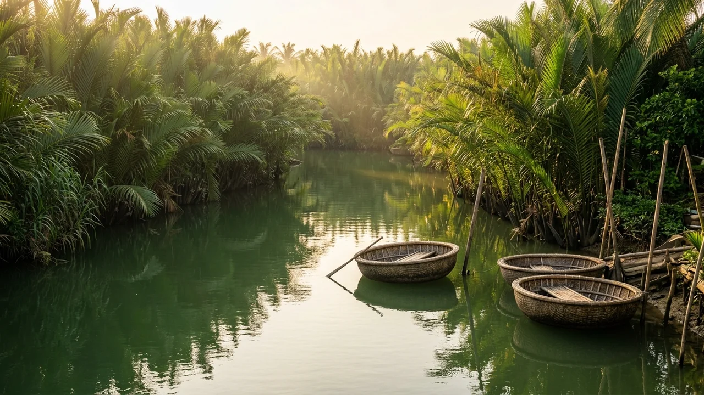
9. Rừng Dừa Bảy Mẫu — Sông Nước Cẩm Thanh
Lênh đênh thuyền thúng len lỏi qua rặng dừa xanh mướt, xem nghệ nhân quay thuyền thúng điêu luyện và câu cua đá thú vị.
10. Bãi Biển An Bàng — Nắng Vàng Biển Xanh
Chốn nghỉ dưỡng bình yên thư thái, đón bình minh rạng rỡ và thưởng thức nước dừa tươi bên làn gió biển mát lành.
🚗 6. Cẩm nang di chuyển & Cung đường giao thông
Hội An có vị trí giao thông vô cùng thuận tiện, chỉ cách sân bay quốc tế và ga đường sắt trung tâm Đà Nẵng khoảng 30km (chưa đầy 45 phút di chuyển):
| Phương tiện di chuyển | Thời gian di chuyển | Mức giá tham khảo | Đặc điểm & Lời khuyên trải nghiệm |
|---|---|---|---|
| Xe buýt điện / Taxi / Xe đưa đón (Sân bay Đà Nẵng -> Hội An) | 40 - 50 phút | 250.000 - 350.000 đ/chuyến | Đi theo đường biển Võ Nguyên Giáp - Lạc Long Quân ngắm cảnh bờ biển thơ mộng. Xe buýt công cộng số 1 chỉ 30.000 đ/vé. |
| Xe đạp dạo phố cổ (Phương tiện phổ biến nhất) | Chủ động theo giờ | Miễn phí - 40.000 đ/ngày | Hầu hết các khách sạn, homestay đều trang bị xe đạp miễn phí cho khách. Thích hợp dạo phố cổ và đạp xe ra biển An Bàng. |
| Thuê xe máy tự lái (Khám phá ngoại thành Hội An) | Theo ngày | 120.000 - 150.000 đ/ngày | Linh hoạt vi vu rừng dừa Bảy Mẫu, làng gốm Thanh Hà, VinWonders Nam Hội An hoặc bãi biển Cửa Đại. |
| Thuyền nan dạo sông Hoài (Bến sông Bạch Đằng) | 20 - 30 phút | 150.000 - 200.000 đ/thuyền | Thuyền chở tối đa 4 - 5 người. Trải nghiệm thả hoa đăng giấy cầu an lung linh trên mặt sông vào buổi chiều tà và đêm tối. |
Quy định phố đi bộ & Xe không động cơ tại Hội An:
- Khung giờ cấm xe máy: Sáng từ 09h00 - 11h00, Chiều - Tối từ 15h00 - 21h30 hàng ngày. Toàn bộ khu vực trung tâm phố cổ chỉ dành riêng cho người đi bộ và xe đạp, mang lại không gian trong lành, an toàn tuyệt đối.
- Gửi xe bên ngoài phố cổ: Du khách đi xe máy cần gửi tại các bãi xe được cấp phép ở các trục đường vành đai: Hoàng Diệu, Phan Chu Trinh, Hai Bà Trưng (giá gửi 5.000 - 10.000 VNĐ/xe).
🍲 7. Tinh hoa ẩm thực đặc sản
Ẩm thực Hội An là bản hòa tấu tinh tế của sự giao thoa văn hóa thương cảng. Những món ăn tuy mộc mạc, bình dị nhưng thấm đượm gia vị thảo mộc Trà Quế và bí quyết chế biến gia truyền trăm năm của các gia tộc phố Hội:
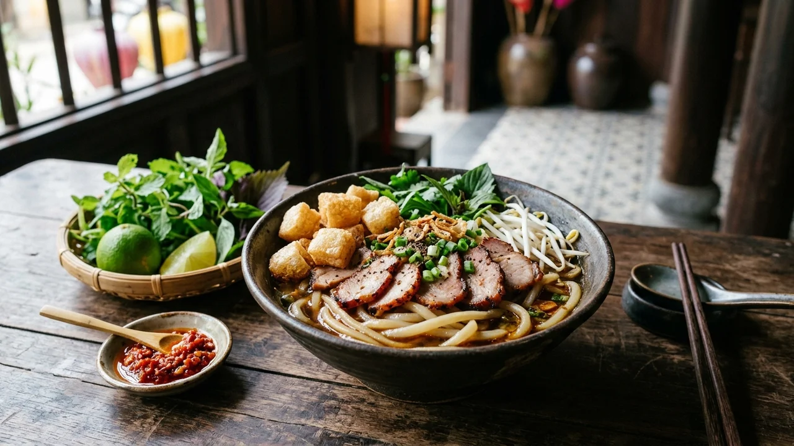
1. Cao Lầu Hội An Chuẩn Vị Giếng Bá Lễ
Món ăn độc bản không nơi nào có thể sao chép trọn vẹn. Nước sốt thịt xíu đậm đà rưới vừa đủ làm ướt sợi mì, khi ăn trộn đều cùng tương ớt xào Hội An cay the và rau đắng nhỏ xíu tạo nên hương vị bùng nổ lưu luyến.
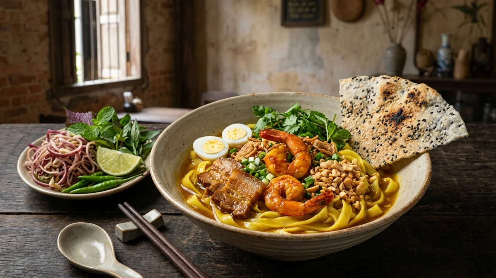
2. Mì Quảng Tôm Thịt Đậm Đà
Khác với phở hay bún, nước nhưỡng của mì Quảng chỉ chan xâm xấp đáy tô nhưng cô đọng vị ngọt béo đậm đà của tôm thịt ninh kỹ. Bẻ vụn miếng bánh tráng giòn rụm vào tô rồi trộn đều, cảm nhận trọn vẹn phong vị mộc mạc đồng quê.
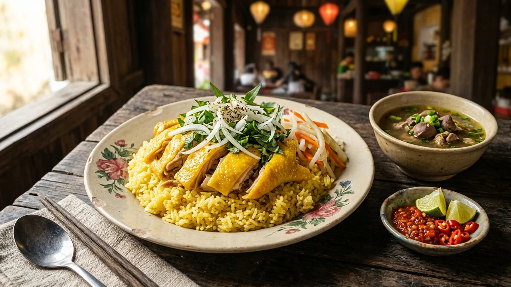
3. Cơm Gà Bà Buội Vàng Óng
Thương hiệu cơm gà nức tiếng phố cổ từ những năm 50 thế kỷ trước. Miếng thịt gà chắc ngọt không hề bở, vị chua cay của gỏi hành tây hòa quyện cùng hạt cơm bùi béo và thìa tương ớt rim cay nồng khiến thực khách nhớ mãi.
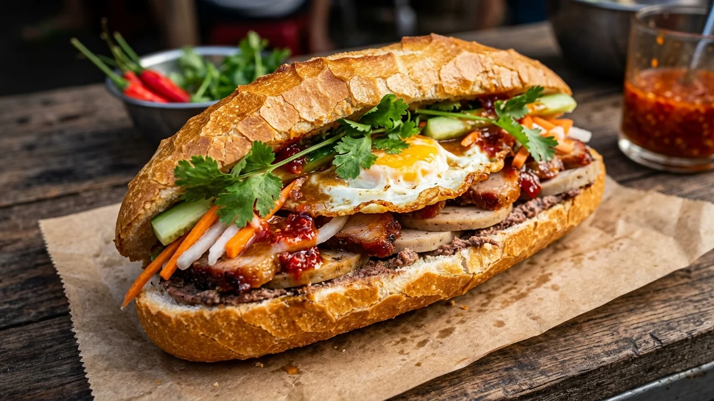
4. Bánh Mì Hội An (Madam Khánh / Phượng)
Được cố đầu bếp huyền thoại Anthony Bourdain ca tụng là "bản giao hưởng ẩm thực trong một ổ bánh mì". Từng vết cắn giòn tan bùng nổ hương vị thơm béo của pate, vị đậm đà của thịt nướng và sự thanh mát của rau dưa tươi rói.
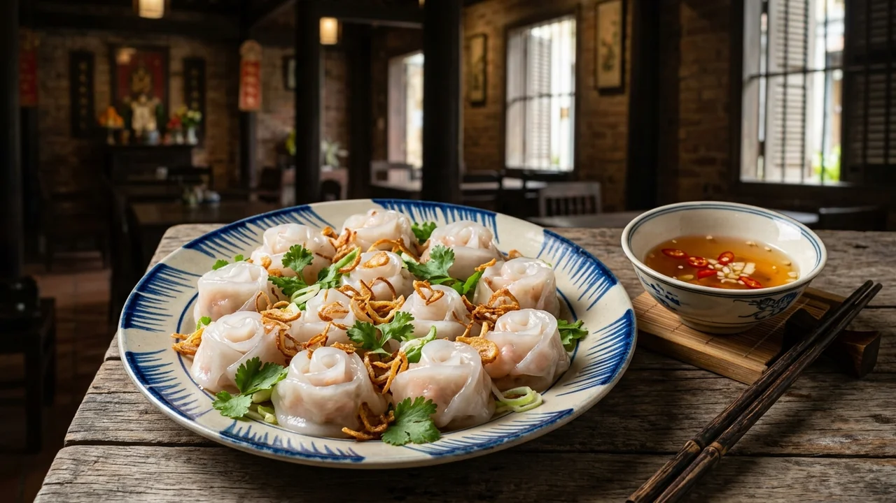
5. Bánh Bao Bánh Vạc (Bông Hồng Trắng)
Được người Pháp ưu ái gọi tên "White Rose" vì vẻ ngoài thanh tao như đóa hồng nở rộ. Vỏ bánh mềm dai dẻo quánh quyện vị ngọt tự nhiên của tôm đất tươi sống tạo nên món khai vị quý phái chốn thương cảng cổ.
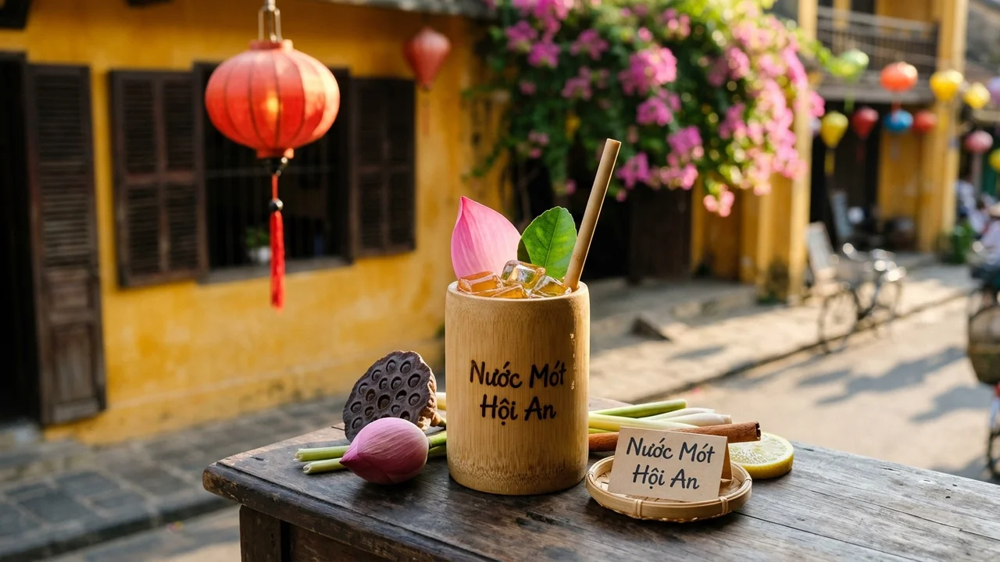
6. Nước Mót Thảo Mộc Hoa Sen
Thức uống giải nhiệt thần thánh trên đường Trần Phú. Ngụm nước mát rượi thơm nồng hương thảo mộc, ngọt thanh dịu nhẹ nơi cổ họng xua tan mọi oi ả nắng hè, trở thành biểu tượng phong cách tao nhã của du khách khi dạo phố Hội.
🎟️ 8. Bảng giá vé tham quan niêm yết
Bảng giá vé tham quan khu phố cổ và các điểm du lịch sinh thái làng nghề niêm yết chính thức bởi Trung tâm Văn hóa - Thể thao & Truyền thanh - Truyền hình TP Hội An (Cập nhật năm 2026):
| Khu Vực Tham Quan / Làng Nghề | Giá Vé Khách Việt Nam | Giá Vé Khách Quốc Tế | Quyền Lợi Tham Quan & Ghi Chú |
|---|---|---|---|
| Vé Tham Quan Phố Cổ Hội An | 80.000 đ/vé (3 điểm) | 120.000 đ/vé (5 điểm) | Bao gồm không gian chung phố cổ, Chùa Cầu, xem biểu diễn nghệ thuật cổ truyền và tự chọn tham quan các nhà cổ, hội quán. |
| Khu Du Lịch Sinh Thái Rừng Dừa Bảy Mẫu | 30.000 đ vé vào cổng | 30.000 đ | Thuê thuyền thúng tham quan: 150.000 đ/thúng (chở 2 người lớn + 1 trẻ nhỏ, hành trình 45 phút kèm xem múa thúng). |
| Làng Gốm Thủ Công Thanh Hà | 35.000 đ/người | 35.000 đ | Bao gồm vé vào làng nghề, tặng 1 sản phẩm gốm tò he con giáp mang về và tự tay trải nghiệm chuốt gốm trên bàn xoay. |
| Công Viên Đất Nung Thanh Hà (Gốm Xanh) | 50.000 đ/người | 50.000 đ | Bảo tàng gốm kiến trúc đất nung độc đáo trưng bày các kỳ quan thế giới thu nhỏ bằng gốm đỏ. |
| Làng Rau Hữu Cơ Trà Quế | 35.000 đ/người | 35.000 đ | Tham quan vườn rau thảo mộc, trải nghiệm làm nông dân và ngâm chân nước thảo dược. |
| Bãi Biển An Bàng & Cửa Đại | Miễn phí vào bãi | Miễn phí | Tự do tắm biển, gửi xe máy 5.000 - 10.000 đ, thuê ghế dù từ 30.000 - 50.000 đ hoặc gọi đồ uống tại quán ven biển. |
🧭 9. Gợi ý lịch trình & Mẹo trải nghiệm bản địa an toàn
Để tận hưởng nhịp sống chậm rãi, sâu lắng của phố cổ và kết hợp nghỉ dưỡng biển đảo sinh thái, GO FAR đề xuất lịch trình trải nghiệm tối ưu 3 Ngày 2 Đêm:
Lịch trình gợi ý 3N2Đ: "Chuyện Tình Phố Hoài — Hồn Xưa Cổ Kính"
Ngày 1: Đà Nẵng — Check-in Hội An — Dạo Bộ Phố Cổ — Thả Hoa Đăng Sông Hoài
- 09h00: Di chuyển từ sân bay Đà Nẵng về Hội An, nhận phòng khách sạn hoặc homestay xinh xắn gần phố cổ.
- 10h30: Thưởng thức bữa trưa cơm gà bà Buội trứ danh hạt cơm vàng dẻo thơm.
- 14h30: Mua vé tham quan di sản: check-in Chùa Cầu 400 năm, chiêm ngưỡng nhà cổ Tấn Ký và Hội quán Phúc Kiến.
- 17h00: Nhâm nhi ly nước Mót thảo mộc mát lạnh, chụp ảnh giàn hoa giấy rực hồng trên nền tường vàng nghệ.
- 18h30: Ăn tối bát cao lầu đậm đà giòn rụm và đĩa bánh bao bánh vạc trắng ngần.
- 20h00: Lên thuyền nan thả hoa đăng lung linh trên dòng sông Hoài, hòa mình vào không gian hát bài chòi rộn rã.
Ngày 2: Rừng Dừa Bảy Mẫu — Làng Gốm Thanh Hà — Chiều Biển An Bàng — Phố Đêm
- 08h00: Ăn sáng ổ bánh mì Madam Khánh giòn tan ngập tràn nhân pate thịt nướng.
- 09h00: Đi thuyền thúng khám phá Rừng dừa nước Bảy Mẫu Cẩm Thanh, xem nghệ nhân biểu diễn quay thúng ngoạn mục.
- 11h30: Ghé Làng gốm Thanh Hà, tự tay chuốt chiếc bình hoa nhỏ bằng đất sét nung làm kỷ niệm.
- 12h30: Ăn trưa tô mì Quảng ếch hoặc mì Quảng tôm thịt đậm đà.
- 15h30: Đạp xe ra Bãi biển An Bàng tắm biển mát lạnh, nằm thư giãn trên ghế dù tre nhâm nhi nước dừa tươi.
- 19h00: Thưởng thức hải sản biển tươi rói bên bờ cát hoặc trở về phố cổ ăn kem ống truyền thống và dạo chợ đêm.
Ngày 3: Làng Rau Trà Quế — Cafe View Nóc Phố Cổ — Mua Quà Lưu Niệm — Tạm Biệt
- 07h30: Đạp xe hít thở không khí trong lành tại Làng rau Trà Quế, trải nghiệm tưới rau bằng gáo đôi.
- 09h30: Lên quán cafe Faifo hoặc 92 Station ngắm trọn vẹn toàn cảnh mái ngói âm dương rêu phong phố cổ từ trên cao.
- 11h00: Mua sắm quà tặng ý nghĩa: đèn lồng lụa Hội An gấp gọn, bánh đậu xanh nhân thịt Hội An, tương ớt xào phố Hội.
- 12h30: Ăn trưa nhẹ nhàng tô bún thịt nướng hoặc bánh ướt cuốn thịt nướng thơm lừng ven sông.
- 14h00: Xe đưa về sân bay Đà Nẵng, kết thúc chuyến hành trình lắng đọng hoài niệm cổ tích.
Mẹo trải nghiệm bản địa & Bảo vệ di sản văn minh:
- Bảo vệ kiến trúc gỗ cổ kính: Không viết vẽ bậy lên tường vàng, không trèo lên lan can Chùa Cầu hay dẫm đạp mạnh lên sàn gỗ các nhà cổ hàng trăm năm tuổi.
- Ủng hộ sản phẩm thủ công địa phương: Đèn lồng, đồ gốm, lụa tơ tằm là tâm huyết của các nghệ nhân, mua sắm sản phẩm chính gốc là cách thiết thực nhất để tiếp sức cho Mạng lưới Thành phố Sáng tạo UCCN Hội An.
- Ý thức giữ gìn vệ sinh sông Hoài: Khi thả hoa đăng, hãy chọn đèn giấy tự phân hủy thân thiện môi trường, không vứt rác, vỏ chai nhựa hay tàn thuốc xuống dòng sông.
- Thời điểm chụp ảnh đẹp nhất: Hãy dậy sớm lúc 06h00 - 07h30 sáng khi nắng mai vừa lên, phố cổ vắng lặng không một bóng xe, sương sớm dịu dàng là lúc ghi lại những khung hình hoài niệm đẹp nhất.